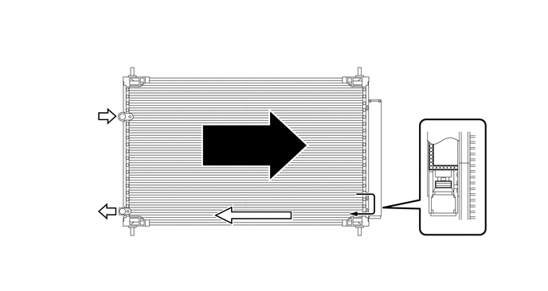
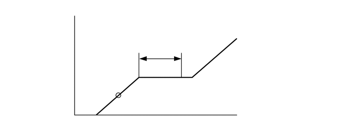

NM3140CG
_58
车辆内饰
_025491
暖风/空调
_0122578
空调系统
DE
详情
F
暖风/空调 空调系统 详情 冷却器冷凝器
结构
a.
采用了辅助冷却冷凝器。此局部挤压管式冷凝器由 3 部分组成：冷凝部分、超制冷部分和气液分离器（调节器）均集成于一体。此冷却器冷凝器（带储液罐的冷凝器总成）的冷却循环系统采用辅助冷却循环以提高热交换效率。
b.
在辅助冷却循环中，制冷剂流经冷却器冷凝器（带储液罐的冷凝器总成）的冷凝部分后，液态制冷剂和还未液化的气态制冷剂在超制冷部分将再次冷却。因此，送入冷却器 1 号蒸发器分总成的制冷剂几乎完全呈液态。

3.25,1.156 3.417,0.438
3.417,0.438 3.75,0.438
true
5.625,1.875 5.833,0.656
5.833,0.656 6.083,0.656
true
5.813,2.375 6.083,3.417
6.083,3.417 6.333,3.417
true
3.354,2.823 3.583,3.5
3.583,3.5 3.833,3.5
true
4.906,1.385 5.167,0.417
5.167,0.417 5.417,0.417
true
3.771,0.333 4.083,0.531
0.313,0.198
10
false
*e
6.125,0.594 6.438,0.792
0.313,0.198
10
false
*b
6.417,3.333 6.729,3.531
0.313,0.198
10
false
*c
3.906,3.406 4.219,3.604
0.313,0.198
10
false
*d
5.469,0.333 5.781,0.531
0.313,0.198
10
false
*a
| *a | 调节器 | *b | 干燥剂 |
| *c | 滤清器 | *d | 超制冷部分 |
| *e | 冷凝部分 | - | - |

|
气态制冷剂 | 
|
液态制冷剂 |
- 提示：
-
辅助冷却循环的制冷剂中的气泡消失的位置低于系统应加注的制冷剂的适当量。因此，如果根据气泡消失的位置来重新加注制冷剂，则制冷剂的量将不足。从而使系统的冷却性能受到影响。如果向系统加注的制冷剂过量，则性能也会下降。有关检验制冷剂量和为系统加注制冷剂的正确方法，请参考修理手册。

2.5,1.99 3.063,1.99
true
1.01,1.177 2.01,1.427
1,0.25
10
false
高压
2.927,0.708 4.604,0.958
1.677,0.25
10
false
适当的加注量
3.104,1.927 5.208,2.177
2.104,0.25
10
false
气泡消失的位置
4.958,2.323 6.344,2.583
1.385,0.26
10
false
制冷剂量